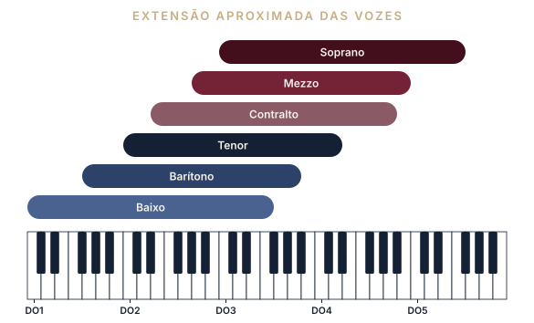
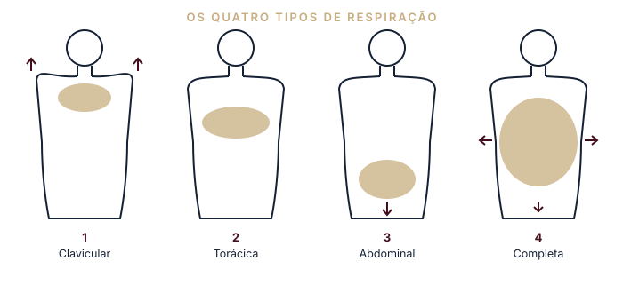
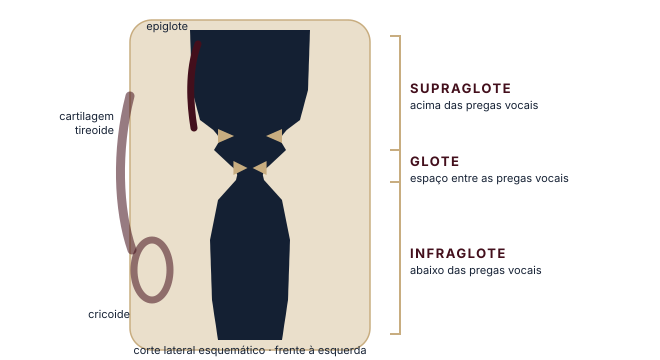
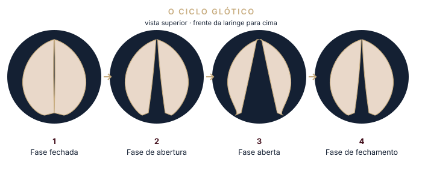

Parte II
Terminologia, classificação vocal, estilos, respiração e a fisiologia que sustenta a voz cantada.
O objetivo deste capítulo é proporcionar o conhecimento dos termos utilizados no canto profissional, que devem ser compreendidos para que se tenha maior domínio sobre a execução.
Quaisquer que sejam as mudanças de timbre, de intensidade, de altura ou as modificações das condições ambientais, a técnica vocal deve permanecer a mesma. O cantor deve somente adaptá-la a esses diferentes parâmetros.
Do ponto de vista funcional, o alcance da voz está sempre relacionado com a energia gasta e se traduz, principalmente, pela consciência de uma tonicidade generalizada no corpo inteiro, pelas sensações proprioceptivas mais perceptíveis e pelo enriquecimento do jogo acústico do timbre.
A voz, diferentemente dos outros instrumentos, não é materializada, e por essa razão é mais difícil de controlar. É por esse motivo que o cantor deve ter à sua disposição uma técnica segura e consciente, baseada em sensações e movimentos precisos, que lhe permitirão não perder o domínio da voz onde quer que esteja cantando.
Assim, pode-se dizer que a condição essencial para que a voz tenha alcance é o controle das sensações internas. São as sensações musculares que informam particularmente sobre a atividade dos órgãos. O trabalho dos músculos, os movimentos dos órgãos e a consciência do tremor vibratório estão associados à propagação da onda sonora através da cavidade faríngea, que segue a parede músculo-membranosa situada ao longo da coluna vertebral. É aí o “lugar da voz”, como dizem os cantores — lugar que eles buscam, com a ajuda de sons de boca fechada, para chegar a um resultado sonoro e a uma sensação vibratória sentida de modos diferentes, segundo a mobilização da laringe, a riqueza harmônica do som laríngeo e a altura tonal. Essas sensações não são percebidas pelo ouvinte, mas são essenciais para o cantor. Elas constituem um meio eficaz de domínio após um longo treinamento.
O conjunto dessas sensações deve ser completado pelo controle audiofonatório, isto é, pela escuta da própria voz, uma vez que o rendimento acústico é controlado pela orelha interna, o que permite avaliar e apreciar a qualidade dos sons. Assim, o cantor utilizará, por um lado, as possibilidades de dominar a voz que escuta por via aérea e, por outro, um conjunto de vibrações buco-faríngeas, nasais e laríngeas que chegam à orelha interna por intermédio da via óssea. Para os sons graves, chegam pelos músculos abaixadores da laringe; para os agudos, pelos músculos elevadores desse órgão.
As sensações auditivas variam em função do lugar onde o cantor se encontra e da acústica. Algumas vezes lhe parece que a sua voz vibra demais; outras vezes, ele escuta mal e a voz parece ensurdecida. Se o cantor não quiser forçar a voz, deverá estar atento às sensações internas, musculares e vibratórias, pois estas não variam e não dependem do lugar onde ele se encontra.
A aquisição da voz cantada se dá com o auxílio dessas sensações, que são o resultado das atitudes e das relações complexas cuja conscientização é indispensável para a qualidade e a estabilidade vocal.
Aos principiantes são necessárias informações sensoriais e vibratórias, por meio de exercícios e de procedimentos complementares que permitam as coordenações musculares que agem diretamente sobre a respiração e, ao mesmo tempo, sobre os órgãos vocais e articulatórios. Para facilitar a pesquisa dessas diferentes sensações, utiliza-se um vocabulário de expressões imaginárias, de metáforas e de evocações subjetivas, acrescidas da representação mental do som, de seu colorido e de seu mecanismo, o que indiretamente acarretará a postura fonatória. É necessário encontrar um equilíbrio entre a pressão expiratória e a emissão vocal, concretizado por uma dinâmica generalizada.
A classificação vocal deve ser feita, principalmente, sobre bases anatômicas, morfológicas e acústicas. É preciso considerar vários fatores, dos quais uns são predominantes e outros, secundários. Se não houver uma avaliação cuidadosa, que leve algum tempo e paciência em sua observação, o cantor corre o risco de cantar em uma tessitura que não lhe cabe. Mesmo achando bonito e agradável cantar em determinado timbre, as consequências podem ser desastrosas para essa voz.
A impressão vocal é como a impressão digital. Muitos cantores fazem sucesso durante algum tempo e depois desencadeiam diversos sintomas vocais, como fadiga e rouquidão, que podem se tornar crônicos, afastando o cantor de sua carreira. O problema é que, fazendo sucesso em um estilo musical que não necessariamente é o que mais se adaptaria à sua voz, dificilmente o artista conseguiria mudar sua imagem.
| Tessitura | Conjunto de notas que o cantor pode emitir facilmente (notas executadas com conforto). |
|---|---|
| Extensão vocal | Conjunto de notas, da mais grave à mais aguda, que pode ser emitido pelo cantor (notas executadas com e sem conforto). |
| A capacidade respiratória e o desenvolvimento torácico e abdominal. |
| A altura tonal da voz falada, desde que o indivíduo utilize aquela que corresponde à sua constituição anatômica. |
| A amplitude vocal, que indica uma voz com sonoridades amplas e arredondadas sobre toda a extensão vocal. |
| A intensidade, que permite a potência sem esforço. |
| O temperamento, que representa o conjunto das qualidades do cantor em relação às suas possibilidades vocais. |
| As características morfológicas. Normalmente admite-se que tenores e sopranos sejam brevilíneos, baixos e gordinhos, e que um contralto ou um baixo sejam magros — mas há exceções. |
| Voz feminina | Voz masculina | ||
|---|---|---|---|
| Soprano | DO3 – FA5 | Tenor | DO2 – RE4 |
| Mezzo | LA2 – SI4 | Barítono | SOL1 – LA3 |
| Contralto | MI2 – LA4 | Baixo | DO1 – FA3 |
Notação de oitavas conforme o material original.

Se dividirmos os tipos de canto, teremos dois grandes grupos: o canto clássico e o canto popular. Dentro de cada grupo encontramos estilos diferentes.
No canto clássico, encontramos ao longo da história muitas abordagens para a sua execução, com diferentes linguagens. No entanto, o que se privilegia desde o século IV, com o surgimento dos cânticos nas igrejas em Roma, é o domínio da coordenação pneumofonoarticulatória, da passagem de registro sem modificação perceptível do timbre e de uma perfeita agilidade vocal.
A ópera italiana era uma forma original de arte musical que ganhou tanta força e importância que se passou a cultivar intensamente a voz, criando-se uma técnica para o seu aperfeiçoamento. O idioma italiano, com numerosas vogais puras e poucas consoantes finais, facilitava o emprego desse idioma no canto.
É importante mencionar os cantores castrados (castrati), que ganharam fama durante o século XVI. A fama avançou pelo continente europeu. A prática consistia em castrar meninos ainda muito jovens e submetê-los a um treinamento vocal sem descanso. Os castrati eram considerados vozes sem igual, resultado acústico provocado pela emissão de uma laringe pequena, de menino, não desenvolvida devido à alteração dos hormônios sexuais masculinos, com frequência fundamental gerada nas pregas vocais reforçada nos ressonadores de um adulto. O resto do crescimento seguia comandado normalmente pela glândula hipófise.
Ainda dentro do canto clássico, em 1602 destacou-se a Récita, o canto declamado, cuja emissão se assemelha à voz cantada do ponto de vista fisiológico. Desde então foi nascendo o bel canto, que exigia um domínio perfeito da técnica, com grande beleza sonora, extensão vocal ampliada e grande agilidade vocal. Não havia maior interesse em grande intensidade, visto que as apresentações eram realizadas, em geral, nas salas dos palácios, não tão grandes quanto os teatros criados posteriormente.
Começa a haver reações ao bel canto e, aos poucos, vai se consolidando a capacidade expressiva do conjunto orquestral, inovando a arte da instrumentação.
No período do Romantismo, a voz passa a ter grande importância na expressão, na declamação e na interpretação dos personagens. Assim, no começo do século XIX, em Paris, surge o canto com voz coberta, voz apoiada, deixando de lado o falsete e a voz suave, tão utilizados no bel canto. Essas características foram substituídas por sobreagudos reais, em vozes que protagonizaram personagens com virilidade e convicção.
A ópera alemã, a francesa, a italiana e todos os românticos passaram a exigir vozes com grande potência, expressão, extensão vocal e domínio de registro. Eis o canto lírico.
No século XX, os compositores surgem com um estilo que requer cantores que possam, além de cantar, atuar, dançar e improvisar. Nesse caminho vai ganhando espaço o canto belting, que hoje temos a oportunidade de apreciar no grande movimento dos musicais — inclusive com músicas populares que “misturam” algumas colocações do lírico, trazendo, porém, a ressonância mais para a “máscara” e provocando um som mais “rasgado” (SUNDBERG; GRAMMING; LOVETRI, 1993; BJORKNER, 2008).
Quando diferenciamos os dois cantos, o popular e o lírico, encontramos vários aspectos importantes a considerar: extensão, articulação, interpretação, classificação das vozes, qualidade do vibrato e intensidade.
A extensão vocal no canto popular não é tão exigida quanto no canto lírico, em que as composições exploram os extremos da voz. No canto popular, o que prevalece é a liberdade de expressar-se sem tanto rigor técnico. Com a possibilidade do uso do microfone, o cantor popular pode usar a voz sem tanta intensidade e, por exemplo, interpretar de forma pessoal, variando divisões rítmicas e improvisações melódicas.
Outro aspecto é a forma de pronunciar a frase musical. Para o canto lírico, prevalece o som, e qualquer sacrifício é feito em favor de seu embelezamento, até “abrir mão” da compreensão das palavras e da letra da música — aspecto de suma importância no canto popular.
São numerosos os gêneros inerentes à música popular, tais como o samba, o chorinho, o frevo, o baião, o maracatu, a música caipira, a música nativista gaúcha, as cantilenas, o rock, o blues e o jazz. Em geral, estão associados ao ritmo, à cultura e à construção de uma sociedade.
Na virada do século XX, a música popular apresentava-se sob a forma de ópera ligeira ou “opereta” e do entretenimento predominante nos teatros. Cinquenta anos depois, o mundo deixava-se dominar pelo rock’n’roll. O catalisador dessa transformação surgiu quando descendentes de escravos do oeste africano introduziram nos EUA o ritmo jazz.
No Brasil da virada do século, compositores do Rio de Janeiro começaram a tocar ritmos estrangeiros de um modo muito particular. Os instrumentos por eles utilizados conferiam às músicas um tom melancólico, que deu origem ao nome desse novo estilo: o choro. A primeira música a ser assim denominada foi “Apanhei-te, Cavaquinho”, de Ernesto Nazaré. Outra precursora foi Chiquinha Gonzaga, que também fez enorme sucesso com suas marchas e modinhas, como a célebre “Abre Alas”, considerada a primeira canção carnavalesca carioca.
A comédia musical desenvolvia-se paralelamente ao jazz. A Broadway, zona teatral de Manhattan, atingiu seu auge na década de 1920. Canções memoráveis tomaram a imaginação do público em espetáculos leves como Lady, Be Good (1924) — o primeiro grande musical de George Gershwin, que fundia música clássica, popular e jazz e criou um novo som, tipicamente americano.
No Brasil, o choro havia deixado de ser somente instrumental para também ser cantado. Influenciado pelo maxixe e pelo samba, passa a ser tocado em ritmo mais veloz e alegre. Surge então o chorinho ou samba-choro, estilo que se espalhou pelos salões de dança cariocas. Um dos fundadores do gênero foi o compositor Pixinguinha.
Nos EUA, os musicais invadiram a tela do cinema de Hollywood. O astro do rádio Bing Crosby mostrou a sua voz marcante em O Rei do Jazz (1930).
O fim da Lei Seca obrigou muitos músicos a trocar a vida noturna pela luz do dia. O jazz adaptou seu estilo, modelando-se à dança de salão, na forma de grandes orquestras e do suingue. Os chefes de orquestra Count Basie, Duke Ellington e Paul Whiteman lideraram a mudança. Billie Holiday foi a grande diva da década, com suas interpretações de músicas populares. Em 1937, Glenn Miller marcava a época das big bands.
A década de 1930 é a “era de ouro” da música brasileira. Noel Rosa transforma situações do cotidiano em poesia nos seus sambas, como em “Com que roupa eu vou?”, de 1931. Com o desenvolvimento do rádio, surgiam cantores como Francisco Alves e Orlando Silva, “o cantor das multidões”, que entoavam sambas compostos por Lamartine Babo, João de Barro e Ataulfo Alves. Em 1938, Carmen Miranda canta “O que é que a baiana tem?”, de Dorival Caymmi, no filme Banana da Terra. Ary Barroso compõe “Aquarela do Brasil”, gravado em 1939.
Hollywood continuou a revelar astros americanos como Ella Fitzgerald e Frank Sinatra. Em 1942, o gênio musical de Irving Berlin produziu a canção “White Christmas”; a versão de Bing Crosby vendeu mais de 30 milhões de discos. Frente à suavidade do suingue, surgiu um novo estilo de jazz, o bebop ou “jazz quente” — uma forma experimental de ritmos e harmonias dissonantes, liderada pelo saxofonista Charlie Parker, pelo trompetista Dizzy Gillespie e pelo violonista Charlie Christian, o primeiro a usar amplificação elétrica.
No Brasil, difunde-se nos centros urbanos o gênero com raízes no folclore nordestino, o baião. À música homônima ao gênero, lançada em 1946, seguiram-se outros sucessos de Luiz Gonzaga, como “Asa Branca” e “Assum Preto”. Em 1947, “Nervos de Aço” inaugurava a longa galeria dos famosos sambas-canção com a temática da “dor de cotovelo”, de Lupicínio Rodrigues.
A mistura do rhythm and blues negro com a country music branca produziu o estilo dominante das décadas seguintes: o rock’n’roll.
O sucesso do samba-canção se mantinha nas rádios brasileiras da década de 1950, nas vozes de Dalva de Oliveira, Emilinha Borba e Cauby Peixoto. Em 1958, surge um estilo de influência “jazzística” que revolucionou o samba urbano: a Bossa Nova. Seus principais expoentes foram Tom Jobim e João Gilberto, que rompeu com a tradição do bel canto dramático dos cantores de rádio, com suas interpretações sofisticadas e intimistas, acompanhadas por violão, como em “Chega de Saudade”.
Nos EUA, o rock’n’roll deu lugar a uma revivescência do folk e do puro rhythm and blues. Os cantores Bob Dylan e Joan Baez lideraram o movimento. “Blowin’ in the Wind”, de Dylan, tornou-se um hino dos direitos civis.
Na Grã-Bretanha, os Beatles criaram um estilo musical próprio. Em 1962, o compacto “Love Me Do” iniciou uma carreira ininterrupta de primeiros lugares nas paradas de sucesso até 1970. O rock continuou a se desenvolver na Grã-Bretanha com a guitarra experimental de Jimi Hendrix e a mistura de rhythm and blues e rock’n’roll dos Rolling Stones. Em 1968, surgiu um estilo de rock mais pesado na música do Black Sabbath.
No Brasil, as atuações transgressoras de Caetano Veloso, Gilberto Gil e Os Mutantes marcaram o surgimento da Tropicália, no festival da Record de 1967; o primeiro lugar do festival, no entanto, coube a “Ponteio”, de Edu Lobo e Capinam. Longe do clima politizado dos festivais, jovens paulistas se divertiam com o rock’n’roll, criando a “Jovem Guarda”, cujos principais integrantes eram Erasmo Carlos, Wanderléa e Roberto Carlos. A década de 1960 assistiu ainda ao retorno do samba tradicional, com as gravações das músicas de Cartola e Nelson Cavaquinho na voz de Nana Caymmi.
O estilo de rock do Led Zeppelin ficou conhecido como heavy metal e, na década de 1970, novos grupos como Van Halen (1974) e Def Leppard (1977) adotaram o novo som. Uma mistura de rock e pop melódico resultou no glam rock de Elton John e David Bowie. Em 1976, os Sex Pistols atacavam a Grã-Bretanha com a música “Anarchy in the UK”, inaugurando o punk rock.
Ao contrário, a discoteca ganhou força internacional, com uma batida pop destinada à dança e com ênfase na produção de estúdio. As elaboradas harmonias vocais do grupo sueco ABBA fizeram sucesso em toda a Europa, com músicas como “Dancing Queen” (1976). Ritmos do Caribe fundiram discoteca e soul na criação do reggae, com uma forte batida sincopada e pesada linha de baixo. O jamaicano Bob Marley popularizou o gênero no mundo todo com “Get Up, Stand Up”, de 1973.
No Brasil, Milton Nascimento lança o álbum Clube da Esquina em 1972; dois anos mais tarde, Elis Regina atinge o ápice de sua carreira ao gravar com Tom Jobim o disco Elis & Tom, em que canta clássicos como “Águas de Março”. Surgem compositores voltados para a música instrumental, como Egberto Gismonti e Hermeto Pascoal. No rock, Rita Lee, separada dos Mutantes, inicia sua carreira solo, e Raul Seixas torna-se famoso com a canção “Ouro de Tolo”, de 1973.
O punk sobreviveu durante a década de 1980 na Grã-Bretanha e deu origem ao hardcore, rápido, distorcido e não comercial. Nos EUA, o álbum de estreia de Madonna (1983) produziu hits americanos, como “Holiday” e “Lucky Star”. Dois outros vocalistas se destacaram: Prince e Michael Jackson, cujo Thriller (1982) tornou-se o álbum mais bem-sucedido de todos os tempos, com mais de 100 milhões de cópias vendidas até então.
A partir da década de 1990, a música popular se globalizou e se diversificou ainda mais. Cantoras como Whitney Houston e Mariah Carey consolidaram no pop e no R&B um canto fortemente melismático, que influenciou gerações de intérpretes — tema que retomaremos no capítulo sobre melismas. O hip-hop e o R&B passaram a dominar as paradas, o sertanejo ganhou uma nova roupagem nas vozes e nos arranjos do chamado “sertanejo universitário”, o funk carioca se tornou um dos gêneros mais ouvidos do país e, com a internet e o streaming, estilos de todo o mundo — do pop coreano ao trap — passaram a conviver nas mesmas playlists. Para o cantor e para o professor de canto, isso significa que o repertório é cada vez mais plural: dominar fundamentos de técnica, saúde vocal e ornamentos permite transitar entre estilos sem abrir mão da saúde da voz.
O aparelho respiratório compreende o tórax, no interior do qual se encontram os pulmões. O tórax é composto de doze pares de costelas, fixas atrás na coluna vertebral, que formam uma curva côncava para dentro e inclinada para baixo. Por intermédio das cartilagens, elas se inserem no osso esterno, na frente, com exceção das duas últimas, as costelas flutuantes, que permitem maior mobilidade da parte inferior do tórax no sentido anteroposterior e lateral. As costelas estão ligadas umas às outras por músculos inspiradores e expiradores. Um conjunto muscular muito poderoso recobre a caixa torácica e permite os movimentos necessários à entrada e à saída do ar pulmonar.
A cinta abdominal é composta de vários músculos, dos quais os principais são o transverso do abdômen, o grande oblíquo, o pequeno oblíquo e o grande reto, que garantem ao aparelho respiratório elasticidade e participam, também, na sua totalidade, da dinâmica respiratória e da sustentação da voz. É preciso lembrar o grande dorsal, na região lombar, utilizado na inspiração e, principalmente, na expiração. O trabalho dessa musculatura poderosa é indispensável à firmeza das costelas durante o canto. A atividade desse conjunto de músculos permite modular e regular a pressão expiratória, segundo as exigências da música, por meio de um controle consciente e permanente.
A capacidade pulmonar varia de indivíduo para indivíduo, segundo a idade e o gênero. Difere também conforme a posição: é menos importante na posição deitada, mais profunda quando o sujeito está de pé e um pouco menor quando sentado. Normalmente, na voz cantada, a capacidade pulmonar oscila entre 1 e 1,5 litro, dependendo do comprimento da frase. Varia também conforme o tipo de respiração. Na respiração costal superior, é mínima, porque essa é a parte mais estreita da caixa torácica, permitindo pouco desenvolvimento e provocando contrações intempestivas da região do pescoço e dos músculos laríngeos. Além disso, a subida do diafragma fica limitada pela ausência de movimentos abdominais.
É importante o controle do sopro — o modo como ele é economizado, disciplinado e utilizado conscientemente —, a fim de fornecer a pressão que corresponde às necessidades da música.
A laringe está situada acima da traqueia, à frente da parte inferior da faringe, atrás e sobre a base da língua, ao nível das quatro últimas vértebras cervicais. Compreende numerosas cartilagens ligadas e articuladas entre si, como também aos órgãos vizinhos, por meio de ligamentos e membranas. Sua mobilização é feita com o auxílio de um conjunto de músculos que se distribuem em todas as direções e que estão recobertos de mucosas.
Alguns são abaixadores ou elevadores da laringe; outros são músculos constritores; alguns permitem a adução ou a abdução das pregas vocais e a sua mobilidade. A laringe está envolvida por massas musculares cervicais, cujas contrações excessivas podem impedir ou comprimir a circulação sanguínea no nível dos vasos de grosso calibre. Ela é ricamente vascularizada.
No canto, como na palavra falada, a laringe, que é um órgão móvel, deve estar livre para executar movimentos de elevação ou abaixamento relacionados com as flutuações da linha melódica. Mas ela só pode se elevar, abaixar ou deslocar-se da frente para trás por meio dos movimentos da língua, da mandíbula e das modificações no volume das cavidades de ressonância. Assim, a laringe garante sua mobilidade e o mecanismo das pregas vocais. Muda também de lugar conforme a posição da cabeça, a pressão expiratória e as atitudes articulatórias, que são o resultado de um mecanismo fisiológico regulado por movimentos precisos e que dependem da nossa vontade.
Pode também prestar-se, por meio de um treinamento singular, a adaptações diferentes das que acabam de ser descritas ou, ainda, a atitudes predeterminadas, automatizadas e contrárias à sua função fisiológica. Se obrigarmos a laringe a adotar uma posição constantemente baixa — portanto contraída na totalidade da extensão vocal — ou uma atitude sempre muito elevada, não haverá relação entre a localização do órgão e a altura tonal. Nos dois casos, essas posições antifisiológicas impedem a adaptação das cavidades de ressonância, modificam as vibrações das pregas vocais, atrapalham os movimentos de articulação e alteram o timbre. A emissão torna-se, em pouco tempo, difícil, sempre que certos princípios básicos não são respeitados.
A laringe é o elemento vibrante, uma vez que nela estão as pregas vocais. Estas são em número de duas, de cor branca, constituídas por pregas musculares localizadas horizontalmente. Sua inserção anterior está situada ao nível do pomo de Adão. Sua dimensão varia segundo o gênero, a idade e a categoria da voz. Estão inseridas nas cartilagens, ligadas entre si por uma musculatura que garante seu funcionamento, e são recobertas por uma mucosa estimulada por movimentos ondulatórios de baixo para cima e da frente para trás.
As pregas vocais executam movimentos de aproximação e afastamento que correspondem à altura tonal. Quanto mais alta é a frequência, mais agudo é o som, e o inverso para o som grave. Sua coaptação, mais ou menos profunda e firme, varia na pressão e na quantidade segundo a nota emitida. Elas podem também se alongar, se esticar, se estreitar, se alargar ou relaxar.
As pregas vocais fornecem um som complexo, composto de um fundamental, que representa a altura tonal, e dos harmônicos agudos que o acompanham e são múltiplos desse som. Elas entram em vibração, comandadas pelo cérebro e controladas pelos centros de audição. No momento da emissão laríngea, várias condições devem estar reunidas: uma pressão regulada conscientemente, a acomodação das cavidades supralaríngeas e uma boa colocação da ressonância. O conjunto dessa atividade muscular realizará os sinais acústicos de frequência variável e os sustentará.
O cantor faz de si mesmo o seu instrumento. Ele não deve desenvolvê-lo conforme o seu gosto pessoal: trata-se, unicamente, de aprender a utilizar a voz que a natureza lhe deu. Isso só acontece quando se respeitam as leis da física, da fonética, da acústica e da fisiologia. Ele deve ter condições de cantar sobre toda a sua extensão vocal, respeitando o colorido das sonoridades vocais, além de ter uma voz afinada e homogênea, tanto na intensidade quanto na suavidade, sem modificação do timbre e com alcance sem esforço.
O cantor deve contar com o controle visual, que facilitará a apreciação dos movimentos da articulação, da língua e da mandíbula, evitando assim as contrações intempestivas do rosto e da respiração. Esse procedimento de facilitação será completado pelo controle tátil, no nível da região abdominal, do grande reto e da base do tórax, que revela os erros da mecânica respiratória e a qualidade do trabalho da musculatura costoabdominal concomitantemente. Também é possível sentir os esforços laríngeos colocando os dedos de cada lado do pomo de Adão — e, do mesmo modo, sentir a posição muito alta ou muito baixa da laringe em relação à sua posição normal.
A voz só existe a partir do momento em que a expiração pulmonar fornece uma pressão suficiente para fazer nascer e manter o som laríngeo. Aprender a cantar é, inicialmente, aprender a respirar, ou seja, treinar para obter uma respiração adaptada ao canto.
A respiração é vital, pois garante as trocas químicas entre o ar e o sangue. Nesse caso, é um gesto inconsciente, instintivo, cujos movimentos são regulares, rítmicos, simétricos e sincrônicos. Mas, para o aprendiz de canto, os movimentos respiratórios devem ser conscientes e disciplinados, para se tornarem ativos e eficazes, após um longo treinamento, e assim serem colocados a serviço da função vocal e da música.
Esse treinamento põe em jogo o comando nervoso e todo um conjunto muscular apropriado, a fim de adquirir a agilidade e a firmeza indispensáveis a toda atividade muscular. A respiração na voz cantada difere, em alguns aspectos, daquela que usamos na voz falada, devido às exigências impostas pela música.
Portanto, para o cantor, não se trata de deixar o sopro escoar sem controle. Ao contrário: ele deve aprender a economizá-lo e dosá-lo, isto é, regular constantemente o gasto de ar segundo a intensidade, a altura tonal, o timbre, a extensão e a duração da frase musical.
Voluntariamente, ele deve retardar o fechamento das costelas com a ajuda da sustentação abdominal e da solidez dos músculos paravertebrais. São as massas costoabdominais que, tomando ponto de apoio sobre a coluna vertebral, regulam a pressão expiratória. É sobre essa musculatura dorsolombar que os músculos da cinta abdominal e os da parte inferior do tórax vão encontrar um ponto de resistência.
A firmeza costoabdominal e dorsal constitui o que chamamos de manutenção do sopro. Mas essa firmeza, essa atividade da musculatura, jamais deve ser excessiva. Deve ser equilibrada, dosada, nunca dar a impressão de esforço em excesso; deve estar apta a relaxar a todo momento. A qualidade da voz não requer uma pressão excessiva, desmedida, assim como a força muscular não requer a rigidez dos músculos, mas sim a sua tonicidade, a possibilidade de firmar-se ou de relaxar a todo momento, conforme a vontade do cantor.
Para obter esse resultado são precisos longos anos de trabalho, principalmente no início. Algumas pessoas são rígidas, ou porque não se aplicam ao que é proposto, ou porque lhes pedem coisas além do que podem realizar, ou ainda porque é da sua própria natureza. Outras, ao contrário, adquirem rapidamente um gesto ágil, uma capacidade suficiente, e conseguem um equilíbrio entre o trabalho dos músculos abdominais e a abertura das costelas. Para estas, o treinamento será fácil e eficaz, ainda mais se forem atentas e tiverem o instinto do canto.
Quando as frases têm certa duração, o sopro deve ser bem dosado desde o início; porém, isso vai depender da frase e de ela começar pelo grave ou pelo agudo. No primeiro caso (grave), normalmente há um gasto maior de ar, por causa das vibrações mais lentas das pregas vocais, o que exige pouca pressão. Gastar muito ar impede de timbrar o grave ou incita a comprimir. É preciso moderar as contrações ativas da cinta abdominal e tratar de manter o sopro, estendendo sua duração: ele deve ser economizado, mas não retido. No segundo caso (agudo), o gasto de ar é médio e a pressão é mais forte, já que a frequência de vibração das pregas vocais é mais rápida. Essa forte pressão requer maior atividade da musculatura costoabdominal e mais firmeza na região paravertebral. É preciso retardar o fechamento das costelas.
Entre essas posições extremas, devemos intercalar todas as diferenças intermediárias impostas pelas variações de altura, intensidade, timbre e duração. No que diz respeito ao extremo agudo (agudíssimo), não se deve inspirar uma quantidade grande de ar. Erradamente se pode pensar que, quanto mais ar, maior o sustento do agudo, mas é exatamente o contrário. Confundem-se capacidade e pressão, isto é, quantidade de ar inspirado e tonicidade muscular. Mais ar do que o normal no agudo obriga a laringe a uma contração exagerada e obriga também a coaptar fortemente as pregas vocais. No canto, jamais é preciso inspirar o máximo de ar: isso é reservado a certa ginástica respiratória.
Como todos os exercícios de vocalização são executados de semitom em semitom, indo do grave ao agudo e inversamente, é necessário modificar constantemente a capacidade ou a pressão. Isso quer dizer que, à medida que se sobe, a capacidade tende a diminuir e a pressão aumenta pouco a pouco; o contrário acontece quando se desce a escala. Trata-se sempre da dosagem da quantidade de ar inspirado e do grau de tonicidade imposta à musculatura costoabdominal e paravertebral.
Essas modificações são impostas devido às constantes mudanças de altura, duração, intensidade e timbre, pela posição da laringe e pela frequência vibratória das pregas vocais. Quando se trata de sons ligados, a regulação do sopro é mais minuciosa e mais delicada: o gasto de ar deve ser controlado, mas não retido.
Quando o som aumenta de intensidade, é necessário, por uma contração progressiva da cinta abdominal e do grande reto, intensificar a pressão regularmente. No momento em que o som diminui, a reserva de ar começa a se esgotar; então é preciso manter a pressão para compensar a falta de ar, ainda com mais atenção, pois as possibilidades de apoio diminuem e o cantor tem tendência a relaxar a musculatura. A atividade é menos dinâmica do que nos sons mais intensos, mas deve ser constantemente dosada. A qualidade do timbre será obtida pelo aspecto muscular, pelo controle do sopro e pela manutenção do lugar de ressonância.
Para os sons que necessitam de pouco ar, é preciso fornecer uma pressão média, igualmente sustentada, que irá progredindo até o final da frase, principalmente se ela se situa no agudo. Com a ajuda de uma pressão bem dosada, o som manterá seu colorido vocal e se estabilizará. Mas, como nos sons ligados, a atenção deve se voltar para a conservação da forma das cavidades supralaríngeas e do lugar de ressonância. Os órgãos devem estar bem unidos uns aos outros, com a constante preocupação de uma mediação eficaz do sopro.
Quando as frases são muito intensas, é preciso uma grande quantidade de ar, mas principalmente uma boa sustentação abdominal, bem baixa, apoiando-se sobre os músculos dorsais e paravertebrais. No agudo extremo, nunca se deve usar o máximo de pressão: é preciso ter sempre a impressão de que se pode fazer mais. Não se deve confundir firmeza muscular com esforço ou rigidez da musculatura.
Se o som começar por uma vogal, não devemos usar logo toda a pressão que corresponde ao som a ser emitido, mesmo que seja um som agudo que exija uma pressão muito grande. É preciso “entrar no lugar do som” com agilidade e precisão. Imediatamente depois, deve-se aumentar a pressão por meio da contração abdominal ativa e progressiva. Isso deve ser feito muito rápido, de modo que não se perceba, auditivamente, nenhuma diferença de timbre ou de afinação.
No momento do ataque, além da regulação do sopro, é preciso ter preparado antecipadamente os órgãos de ressonância nos quais ele vai se distribuir e situar, por meio do pensamento, o lugar onde o som vai vibrar. Reconhecemos um bom cantor pelo modo como ele ataca o som. Alguns o atacam com golpe de glote; outros tomam a nota por baixo. Os dois procedimentos são detestáveis: o primeiro porque traumatiza as pregas vocais; o segundo porque indica falta de sincronismo entre a pressão e a vibração das pregas vocais.
Para realizar essa técnica do sopro, a musculatura do tórax e do abdômen deve ser capaz de fornecer mais ou menos tonicidade conforme a vontade do cantor, mesmo durante a duração de um som ou de uma frase musical. Portanto, sustentar o sopro subentende poder intervir na dosagem de pressão a todo momento. Comandar a musculatura respiratória é facilitar os movimentos naturais da laringe e da articulação, bem como adaptar as cavidades de ressonância. A voz cantada exige uma atividade muscular permanente, constantemente adaptada a todas as situações. O cantor deve estar atento ao trabalho de seus músculos e consciente de sua técnica respiratória, da qual depende a qualidade das sonoridades.
Longos meses são necessários para que um cantor possa sentir e realizar o que se exige dele. Frequentemente, o iniciante, se tem facilidade, não acredita na necessidade de se preocupar com o seu sopro: prefere “se escutar”. Quando o cantor confia na própria habilidade e ignora a importância da respiração, podem aparecer, logo depois, dificuldades importantes, como perda dos agudos, dificuldade nas passagens e quebras de frequência, podendo ser seguidas de alterações vocais, como os nódulos.
Dada a fragilidade da voz, o cantor deve possuir uma técnica correta, uma vez que o controle da emissão não é feito unicamente pela audição. Por essa razão, mesmo produzindo belas sonoridades, ele precisa saber a que se devem suas qualidades. Deve também ser capaz de remediar os aborrecimentos passageiros, como, por exemplo, o cansaço. Nesse caso, é preferível dar menos intensidade e compensar com mais timbre, isto é, usando ao máximo as cavidades de ressonância. Dessa forma, mesmo para os mais dotados, o trabalho regular da respiração tem por objetivo treinar a musculatura a fim de adquirir a agilidade e a tonicidade necessárias a toda atividade muscular. Assim, transformar um gesto instintivo em um gesto disciplinado e dominado permitirá ao cantor responder a todas as dificuldades encontradas.
Quanto ao tipo de respiração, encontramos na literatura referências a quatro tipos básicos:

A respiração clavicular ou superior caracteriza-se pela expansão somente da parte superior da caixa torácica, o que ocasiona uma elevação visual dos ombros, podendo ou não ser acompanhada da anteriorização do pescoço. Como a elevação da caixa torácica requer a participação da musculatura do pescoço, observa-se a contração do músculo esternocleidomastóideo (que participa como auxiliar da inspiração apenas quando se quer fazer uma emissão em forte intensidade) e tensão laríngea, com redução do espaço da membrana tireo-hióidea.
A produção vocal é alterada pelo aporte insuficiente de ar, e o som resultante tende a ser agudo, pela elevação e tensão da laringe. O músculo esternocleidomastóideo encontra-se frequentemente tenso nos cantores disfônicos, pois eles tendem a manter a caixa torácica constantemente elevada.
Essa respiração tem foco na parte superior do tórax. Não é muito boa para cantar porque o ar preenche, principalmente, a porção superior dos pulmões, ou seja, a menor parte deles; além disso, pode provocar tontura e formigamento. Com o movimento de subida do tórax, as costelas mais baixas não se abrem, somente as de cima. Essas costelas são menores e têm uma capacidade de abertura muito pequena, pelo fato de haver pouco espaço para se expandirem.
Assim, o cantor não terá muito fôlego e ainda podem ocorrer constrições indesejáveis ao redor das pregas vocais. É também difícil manter a coluna ereta com esse tipo de respiração. Ela se estabelece principalmente em situações de tensão, como quando corremos ou quando estamos assustados; portanto, é inadequada para o canto, já que temos de relaxar o pescoço e os articuladores.
A respiração média, mista ou torácica, a mais comumente observada na população, apresenta pouca movimentação superior ou inferior durante a inspiração e um deslocamento anterior da região torácica média. É a respiração que utilizamos na maior parte do dia, em atividade de repouso ou em conversas coloquiais, mas é inadequada e insuficiente para o uso profissional da voz, principalmente para o canto.
A respiração inferior ou abdominal caracteriza-se pela ausência de movimentos da região superior, que geralmente se apresenta hipodesenvolvida e com rotação anterior de ombros, e pela expansão da região inferior. Aparece em indivíduos com pouca energia, nos quais a sensação de colabamento do tórax é bastante evidente, mas também pode ter sido desenvolvida como a “respiração correta”, em consequência de uma orientação equivocada.
É a respiração usada pela escola erudita alemã de canto. Nela, você empurra a barriga para fora. Esse tipo de respiração causa uma tração traqueal para baixo, devido à descida excessiva do diafragma, e, consequentemente, deixa a laringe pouco móvel. Uma vez que a laringe é mantida muito baixa, o som se torna mais escuro e os agudos, mais difíceis. Além disso, esse tipo de respiração pode fazer com que você encurve as costas, tornando difícil a abertura das costelas de baixo, que são as maiores, e não abrindo espaço suficiente para que o pulmão possa trabalhar livremente, forçando a barriga para fora.
O equilíbrio do corpo é diminuído e não há razão para fazer esse movimento, uma vez que o pulmão se localiza no tórax e não no abdome. Se você for um cantor que dança, pula ou se movimenta muito no palco, sua mobilidade poderá ser prejudicada; se seu estilo pedir extremos da voz, provavelmente não conseguirá fazer uma distorção saudável. Essa técnica é antiga, e a evolução das pesquisas científicas nos mostra maneiras mais eficazes de respirar no canto. Além disso, com o passar do tempo, ao usar muito essa técnica, a barriga torna-se um pouco flácida e acaba se acostumando a ficar para fora.
A respiração diafragmático-abdominal ou costodiafragmático-abdominal, completa ou total, caracteriza-se por uma expansão harmônica de toda a caixa torácica, sem excessos na região superior ou inferior. Há o aproveitamento de toda a área pulmonar, e é a respiração mecanicamente mais eficaz para o desenvolvimento de uma voz profissional. A respiração total será tanto mais profunda quanto maior for a exigência da produção vocal.
Dessa forma, concluímos que uma respiração média ou torácica é suficiente para o uso habitual da voz e, em verdade, representa o mecanismo respiratório mais econômico sob o ponto de vista do gasto energético.
É um trabalho difícil, porque é um movimento contra o natural do corpo, uma vez que, quando expiramos, as costelas tendem a fechar. Esse movimento de costelas cria um espaço grande na caixa torácica e deixa que o pulmão trabalhe livremente, sem nada para empurrá-lo e soltar o ar.
Você é quem vai controlar a sua coluna de ar. Quando for abrir as costelas, preste bem atenção ao movimento. Não deixe que os ombros e o peito subam. Você vai aprender a lidar com os músculos intercostais, que são voluntários. Portanto, você pode apenas abrir as costelas, sem mexer em mais nada, ombros e pescoço. É como abrir a mão sem mexer o braço.
Dica
Treine sempre na frente do espelho para ter uma visão geral da sua postura, e evite tensão na região dos ombros e do pescoço.
Para cantar bem e sem falhas na voz, devemos fazer uso de uma sustentação baseada em toda a musculatura abdominal, incluindo o músculo reto abdominal, os laterais oblíquos, os infra-abdominais, o grande dorsal e demais músculos das costas, e ainda o assoalho pélvico. A essa sustentação chamamos de apoio. O apoio funciona como um êmbolo que empurra a coluna de ar que está dentro dos pulmões para fora.
Quando usamos o apoio — a contração abdominal —, empurramos as vísceras para cima, e elas empurram o diafragma, que empurra a coluna de ar. Dessa forma, a força será tirada do pescoço e deslocada para a cinta abdominal. Quanto mais as costelas estiverem abertas, melhor será o resultado do seu apoio.
Um apoio bem feito requer precisão no uso da sua energia e força física; por isso ele é variável, ou seja, não o use em excesso quando desnecessário. Certos gêneros musicais não requerem uma sustentação muito forte; portanto, não gaste sua energia à toa. Usaremos dois termos para indicar a variação de pressão do ar provocada pela musculatura abdominal:
O apoio é composto por vários grupos musculares que funcionam em conjunto. São eles:
O ponto de partida
Todos os exercícios a seguir partem da mesma posição: em pé, com as costas apoiadas na parede, pés na largura dos quadris, joelhos soltos, coluna alinhada, ombros relaxados, queixo alinhado na vertical com os pés e costelas abertas. Sempre que o texto pedir para “preparar o Ponto de Partida”, volte a essa posição antes de começar.
Nível 1 · Sustentação
Todos os exercícios devem ser feitos com as costas na parede.
Prepare o Ponto de Partida. Inspire e solte o ar fazendo um “ssss” longo e suave, economizando ar pelo máximo de tempo possível. Vale a pena cronometrar para sentir a sua evolução ao longo do treino.
Mantenha as costelas abertas: assim você não comprime o pulmão e não perde ar desnecessariamente. Acredite, você pode precisar de uma reserva de ar para as frases mais longas. Use o músculo reto para controlar a pressão do ar. O som do “ssss” deve ser contínuo e sem variações de intensidade. Vá pressionando a barriga para dentro aos poucos.
Quando o ar estiver acabando, é hora do “pulo do gato”. A dica, para conseguir emitir um pouco mais de ar em músicas com frases de duração extrema, é ir fechando as costelas e puxando a barriga para dentro e para cima. Assim você vai comprimir os pulmões de baixo para cima e usar o seu ar até o final.
Nível 1 · Força — os quatro apoios
Escolha a postura mais adequada ao seu estilo e gênero musical, e aquela de maior conforto, que lhe permita produzir a pressão desejada e impeça a transferência de tensão para a região superior do corpo. Perceba o aumento da pressão produzida em relação aos exercícios anteriores.
Como você pôde observar, cada musculatura acrescida representa um aumento da pressão de ar produzida; logo, você deve perceber quando e como usar cada um dos pontos de apoio. O nível de pressão depende da intensidade desejada, da técnica aplicada, da altura da nota (graves e agudos pedem pressões diferentes) e da interpretação.
Agora que você já pode controlar os seus quatro apoios, treine o uso simultâneo de todos eles e certifique-se de que nenhuma tensão está sendo exercida no pescoço. Sustente os quatro apoios ao mesmo tempo, com força máxima, e relaxe o pescoço. Gire a cabeça para a esquerda e depois para a direita enquanto solta o ar em “ssss”, buscando manter um bom nível de pressão na parte inferior e total relaxamento na parte superior.
Nível 1 · Agilidade
Para passagens, ataques de notas e escalas rápidas.
Você saberia dizer o que é voz? A voz é um som resultante de uma reação neurofisiológica complexa. Identifica a pessoa quanto à sua idade, gênero, características físicas e de personalidade. Além disso, caracteriza também o estado emocional da pessoa, além de nos permitir comunicar.
A voz é produzida na laringe, um órgão cilíndrico situado no pescoço, na altura da sexta e da sétima vértebras cervicais, que se conecta inferiormente à traqueia e superiormente à faringe — aquilo que chamamos de garganta. É formada por cartilagens, músculos, membranas e mucosa. Divide-se em três porções: supraglote, glote e infraglote.

A supraglote é formada pelas estruturas que estão acima da glote. A glote refere-se ao espaço entre as pregas vocais, onde a voz é produzida, sendo imediatamente acrescida de ressonância na própria supraglote. A infraglote compreende a porção abaixo da glote.
A laringe tem basicamente três funções: respiratória, de deglutição e fonatória. Esta última é responsável pela produção da voz.
Para tentar explicar como a voz é produzida, foram desenvolvidas diversas teorias: a teoria da corda vibrante, a teoria muco-ondulatória, a teoria da resistência negativa, a teoria mioelástica, a teoria aerodinâmica e a teoria mioelástico-aerodinâmica, que é, até hoje, a mais aceita.
Essa teoria descreve a produção da voz com base no efeito de Bernoulli: o aumento da velocidade do ar, ao passar pela laringe, faz com que as pregas vocais se aproximem, e a ação elástica da musculatura faz com que elas retrocedam. Apesar de ser a teoria mais aceita, não explica a diversidade da voz humana.
Mas como a voz é produzida, de fato? Nenhuma das teorias da fonação consegue explicar tamanha complexidade. Tentaremos explicar, a seguir, o que se sabe até hoje sobre a fisiologia vocal. Sabe-se que a voz é resultante de um processo de amplificação da fonação nas cavidades de ressonância — a própria laringe, a faringe, a boca e o nariz.
A fonação propriamente dita é proveniente do ar expirado pelos pulmões no processo de respiração. Esse ar, ao passar pelas pregas vocais, faz com que elas se aproximem e vibrem, produzindo um som baixo e fraco, que será posteriormente amplificado. Nos processos de inspiração e expiração sem fonação, as pregas vocais se mantêm afastadas.
A fonação é muito mais complexa do que a passagem do ar fazendo vibrar as pregas vocais. Esse processo é uma ação volitiva, logo, um movimento controlado pelo sistema nervoso central, que tem início a partir de um estímulo vindo do córtex cerebral e leva informação motora até a laringe, onde os movimentos para produzir a voz serão efetuados. Quando o impulso nervoso chega à laringe, ele ativa os músculos cricoaritenóideos laterais e os aritenóideos, que são adutores laríngeos e promovem a aproximação das pregas vocais. A abdução, o processo de abertura das pregas vocais, é feita pelos músculos cricoaritenóideos posteriores.
Simultaneamente à ação da musculatura adutora, ocorre também o aumento da velocidade do ar que está sendo expirado, que, ao passar pelas pregas vocais, diminui a pressão na região glótica, fazendo que a mucosa das pregas vocais seja, literalmente, sugada e faça a prega vocal de um lado tocar a do outro. Como a pressão da subglote se torna superior à da glote, a mucosa vai vibrar. Esse processo é chamado de ciclo glótico, e possui quatro fases:
Esses ciclos ocorrem em velocidade muito alta e não podem ser observados individualmente sem o auxílio de um equipamento de estroboscopia.

A frequência da vibração é dada em hertz, que é a quantidade de ciclos por segundo. Quanto maior a frequência, mais agudo será o som; quanto menor, mais grave.
Você sabe por que a voz da mulher é diferente da voz do homem? Essa diferença começa a ser mais marcante durante a adolescência, a partir de um processo chamado muda vocal, em que ocorrem alterações na laringe que interferem diretamente nas características da voz do indivíduo. Essas modificações se devem à ação dos novos níveis hormonais e provocam um crescimento laríngeo anteroposterior mais acentuado no homem do que na mulher. Uma prova disso é a protuberância na cartilagem tireóidea, conhecida popularmente como pomo de Adão.
Ocorre também, de forma mais acentuada no homem, a descida da laringe no pescoço e o aumento da massa das pregas vocais — visto que, quanto maior a massa e o comprimento das pregas vocais, mais baixa a laringe e mais grave a voz. A voz masculina vai se apresentar mais grave do que a feminina (isso, em situações mais comuns).
Fatores como massa, tensão e alongamento das pregas vocais podem diminuir ou aumentar a frequência de vibração. O último fator, o alongamento, é o principal responsável pela diferença de frequência fonatória de um mesmo indivíduo — ou seja, o motivo pelo qual conseguimos fazer nossa voz ficar mais grave ou mais aguda.
O músculo cricotireóideo aproxima as cartilagens tireóidea e cricóidea, alongando assim as pregas vocais e produzindo sons mais agudos, em um processo chamado de movimento de báscula. Já o músculo tireoaritenóideo promove o encurtamento das pregas vocais, produzindo, assim, os sons mais graves.
Como conseguimos fazer o volume da nossa voz ficar mais alto ou mais baixo? A intensidade da voz está ligada à resistência da glote à passagem do ar. Quanto maior for essa resistência, maior será a pressão subglótica e maior será a força de vibração fonatória — logo, maior a intensidade do som. Quanto mais fraca a resistência, menor a intensidade.
Por que a voz vai mudando com o passar do tempo? A voz desenvolve-se em todas as fases da vida, sofrendo alterações que acompanham o desenvolvimento físico, psicológico e social do indivíduo. A partir das mudanças na dimensão da laringe, na espessura e no comprimento das pregas vocais e nas características da mucosa e da musculatura laríngea, ocorrem diferentes configurações vocais ao longo da vida. Esse processo é chamado de ontogenia vocal.
A produção dos sons envolve os movimentos dos órgãos da fala. É necessário estudar o aparelho fonador para entender a estrutura e a anatomia, e a função e a fisiologia, de cada órgão, bem como o papel que desempenha na produção dos sons. Os órgãos chamados fonadores têm como função primária a respiração, a mastigação e a deglutição; como função secundária, produzem os sons da fala humana.
Quando chega o momento de emitir a voz, o cantor deve preparar-se física e mentalmente para cantar. É preciso que ele se concentre e faça a representação da imagem acústica do som: sua altura, seu colorido do ponto de vista auditivo, seu mecanismo e as sensações que provoca. Esse comando motor e sensorial, que faz parte dos centros nervosos, provocará os diversos movimentos dos órgãos e o trabalho da musculatura.
Isso quer dizer que, praticamente, o cantor se colocará em posição fonatória, o que exige o controle do gesto da respiração e da quantidade de ar inspirado, necessária para o exercício escolhido. É uma preparação consciente, indispensável, da qual depende a emissão vocal: a adaptação voluntária da postura das cavidades de ressonância, o afastamento dos pilares correlacionado à elevação do véu palatino e o trabalho da parede faríngea. A verificação dos pontos articulatórios da língua e dos lábios conforme a letra pronunciada é uma atitude essencial para a livre execução dos movimentos naturais da laringe.
A partir do momento em que se inicia o canto, é preciso considerar a necessidade, já desde as notas graves, da preparação de uma forma, de um molde. Mas, subindo os exercícios de meio tom em meio tom, não há uma modificação súbita da técnica: existe uma continuidade, uma progressão em todos os níveis, tanto no que diz respeito à pressão expiratória, ao aumento de volume das cavidades supralaríngeas, quanto ao deslocamento da laringe e do lugar de ressonância, que se faz no mesmo sentido.
De uma nota a outra existe um modo de transmissão difícil de realizar, que evolui pouco a pouco e do qual é preciso fazer a representação, já que é a única maneira de conseguir que o trabalho muscular e as atitudes dos órgãos se modifiquem a cada nota, progressivamente. Ao descer a escala novamente, normalmente a laringe abaixa progressivamente, acompanhada de um relaxamento da musculatura. Se esse relaxamento é excessivo, a voz cai, perde o timbre e desafina. Para evitá-lo, o cantor deve manter a pressão, bem como o modo de distribuição do sopro e o lugar de ressonância. É preciso conservar certa energia, apesar da descida da escala, e não perder a direção ascendente do sopro.
É importante lembrar que, indo do grave ao agudo, há uma abertura progressiva da boca, associada ao afastamento dos maxilares no lugar onde eles se articulam, bem como uma sensação difusa de tensão laríngea e uma leve elevação da base da língua. À medida que o som sobe, o colorido exato da vogal não é conseguido, porque o cantor, procurando arredondar as sonoridades, ou bocejando os sons, modificou a posição intrabucal que corresponde à vogal pronunciada. Ao contrário, se ela foi respeitada, obtém-se o timbre vocálico próprio de cada vogal, correspondente às zonas específicas dos formantes. Graças à técnica, o timbre extravocálico, particular a cada um de nós, é obtido. Os diferentes formantes serão distribuídos de tal forma que, ao sair dos lábios, a voz possua uma acústica que corresponda à do cantor. Admite-se que a voz cantada comporta vários formantes.
O cantor deve conscientizar-se da importância dos princípios de base da técnica vocal e usar o feedback de sua voz, já que ela é o resultado de um comportamento adquirido com a ajuda de uma atividade muscular determinada e das diferentes sensações que são a base dessa técnica. É por meio de um treinamento progressivo, bem dirigido, que o principiante descobrirá e desenvolverá suas sensações e aprenderá a dominar a tonicidade e a agilidade de seus músculos. Ele deve saber também que, mesmo nos momentos de grande intensidade, é preciso ter sempre a possibilidade de fazer mais ou de poder dominar a musculatura.
Segundo essa técnica, é preciso haver uma coesão, uma continuidade entre os dois extremos: sensação de sustentação do sopro e de tremor vibratório. Os órgãos vocais e respiratórios estão unidos uns aos outros de modo harmonioso e equilibrado, sem jamais dar a impressão de esforço localizado aqui ou ali, à exceção de uma sensação muito difusa de tomada de posição fonatória e de um trabalho bem distribuído, mais ou menos sustentado ou firme, segundo as exigências da música. Esse conjunto de movimentos e sensações, procurado sistematicamente, tornar-se-á, após um longo treinamento, uma sensação global dos movimentos e das sensações que correspondem à técnica da voz cantada, ao mesmo tempo que um meio de controle eficaz e válido para todas as vozes.
Tudo isso não é fácil de realizar. Na maioria das vezes, é preciso recorrer a longos anos de trabalho progressivo e pesquisas pessoais. Não se trata, para o aluno, de imitar a voz do professor ou de procurar um determinado timbre! Trata-se, simplesmente, de aprender a reconhecer que toda anomalia da voz, ou todo êxito, deve encontrar sua significação na consciência do gesto e do controle da sonoridade. Assim, pelo uso de uma técnica correta, ele desenvolverá a sua verdadeira voz.